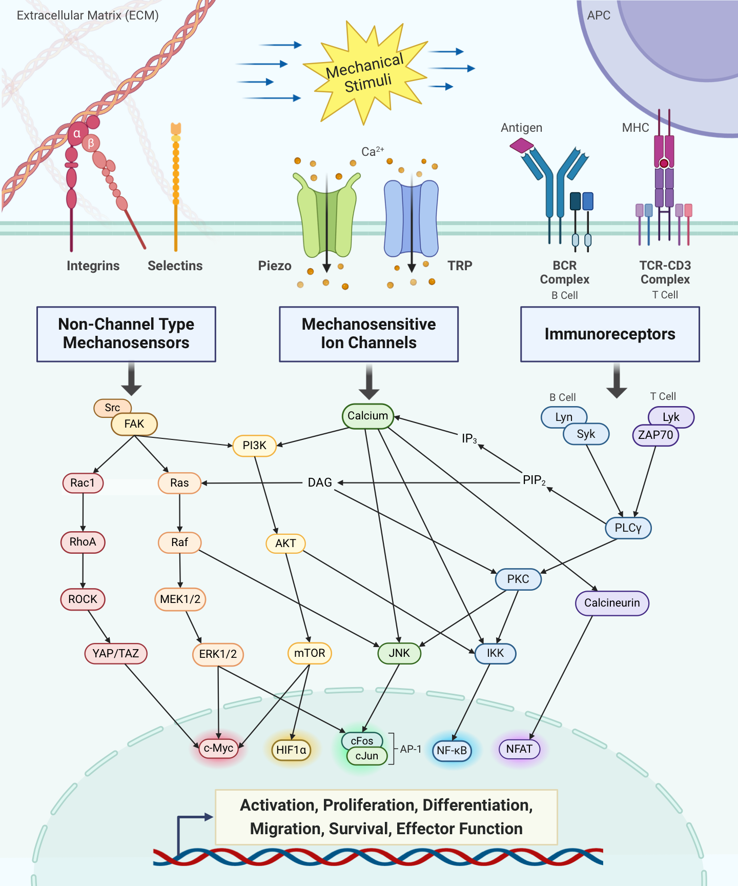
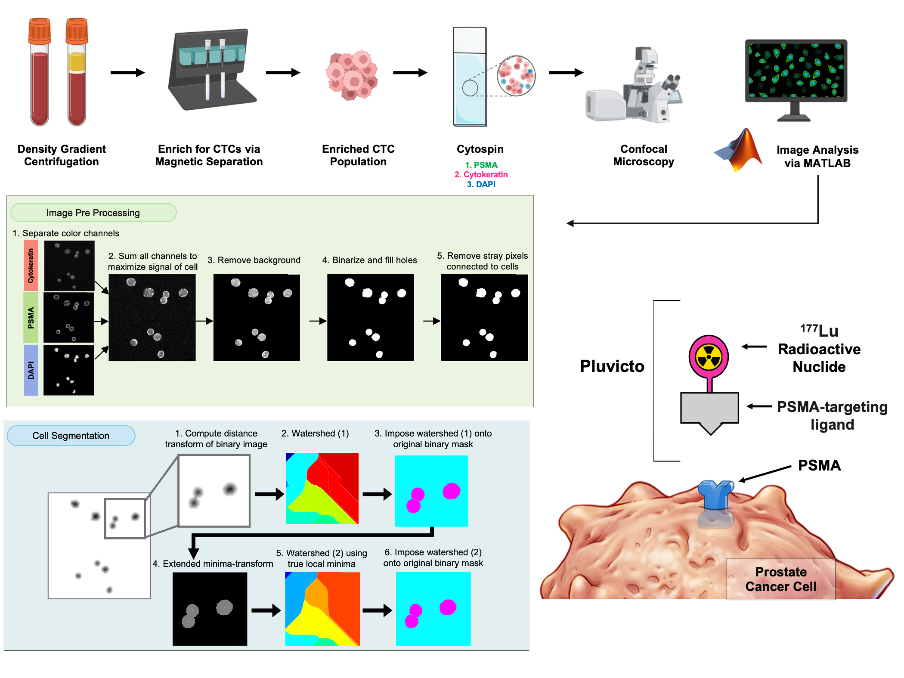
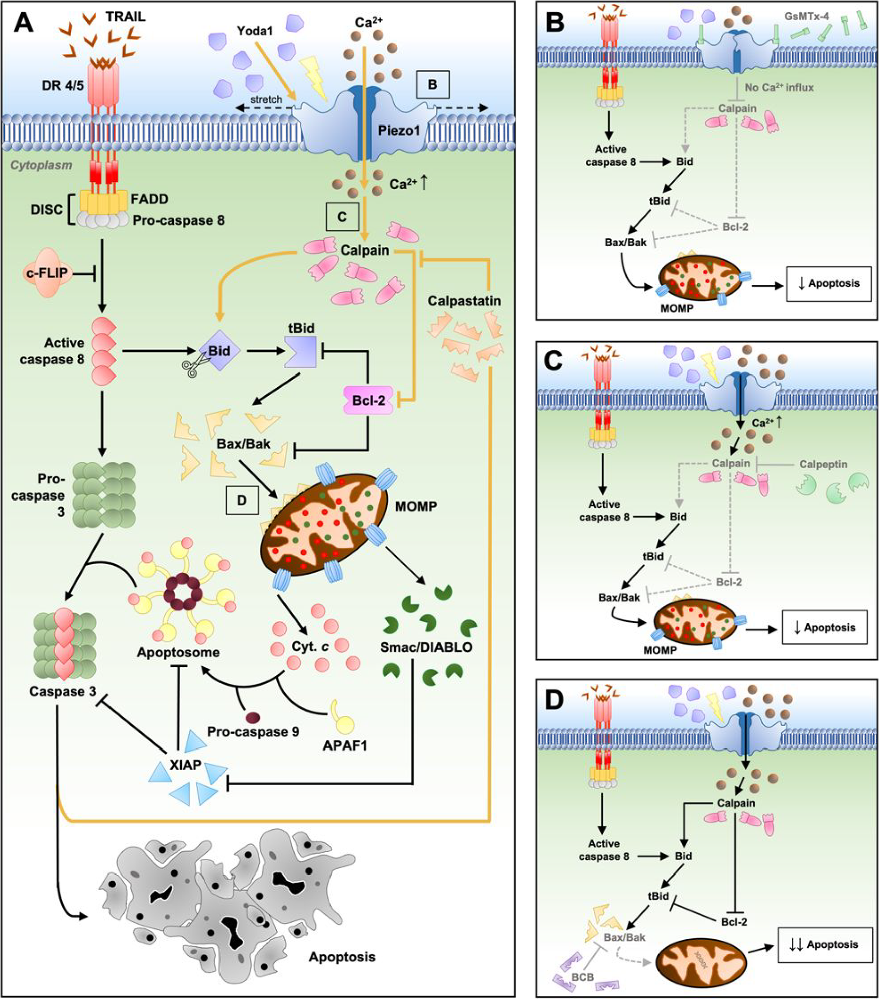
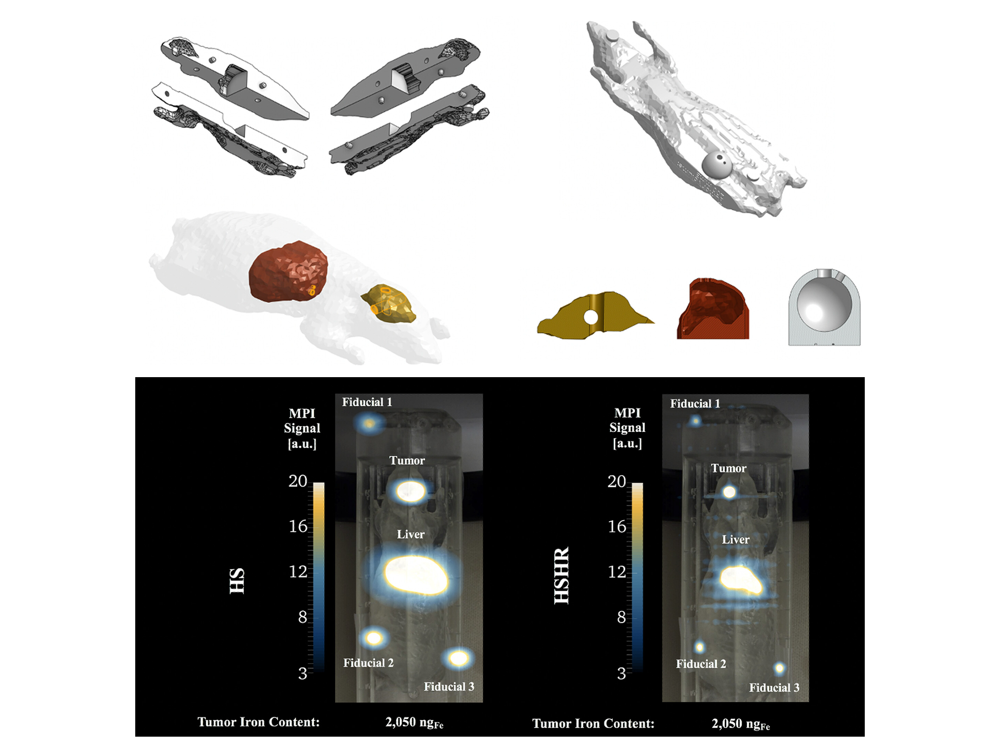

Research
My research integrates mechanobiology, immunoengineering, and translational oncology. I study how physical forces and membrane biophysics shape immune cell function — work aimed at engineering better cell therapies — and apply those tools across cancer contexts ranging from CAR T cell manufacturing to clinical circulating-tumor-cell analysis.

Mechanical Regulation of T Cell Activation
T cells experience mechanical forces such as fluid shear stress (FSS) as they circulate through the body. I discovered that controlled FSS exposure enhances and sustains T cell activation, proliferation, and cytotoxicity by engaging the mechanosensitive ion channel Piezo1. This points toward a scalable, label-free strategy to improve the ex vivo manufacturing of CAR T cells for adoptive cell transfer against solid tumors.
- First-author study demonstrating enhanced and sustained activation in iScience
- First-author review defining the emerging field of immunomechanobiology in IEEE Reviews in Biomedical Engineering
- Co-inventor on an issued patent for FSS-based ex vivo activation of immune effector cells

Membrane Dynamics & Predictive Modeling of T Cell Signaling
Why do T cells from different donors respond so differently to activation? I characterize age- and sex-specific differences in T cell membrane composition and mechanical properties using biophysical assays (micropipette aspiration, optical tweezers, TIRF and IRM microscopy), and I am building an ODE-based computational model of intracellular activation signaling. Together, these reveal how membrane state and mechanical force regulate immune function — informing personalized immunotherapy strategies.
- Developing a predictive model of T cell calcium dynamics and downstream activation signaling
- Linking membrane composition and biophysical properties to mechanosensitivity
- Presented at the BMES Annual Meeting (2024); manuscripts in preparation

Circulating Tumor Cells in Metastatic Prostate Cancer
In collaboration with oncologists and radiologists at Vanderbilt University Medical Center, I led a clinical study tracking circulating tumor cells (CTCs) in men with metastatic prostate cancer undergoing Pluvicto (177Lu-PSMA-617) radioligand therapy. I processed over 100 patient blood samples across treatment timepoints and built a custom image-analysis algorithm to quantify PSMA expression and nuclear features, correlating CTC dynamics with clinical response markers such as PSA levels and radiographic findings.
- Processed 100+ patient samples for temporal analysis of CTC burden and phenotype
- Built a custom image-processing pipeline quantifying PSMA and nuclear features
- Manuscript in review; selected for oral presentation at BMES (2024)

Sensitizing Glioblastoma to Apoptosis
Glioblastoma multiforme (GBM) is notoriously resistant to therapy. Across two collaborative projects, I helped demonstrate that GBM cells can be sensitized to TRAIL-mediated apoptosis through both chemical and mechanical routes — including activation of the Piezo1 mechanosensitive channel, and separately fluoxetine, a repurposed, FDA-approved SSRI (AKA Prozac), acting as a calcium-dependent sensitizer. These findings suggest combination strategies to overcome treatment resistance in one of the deadliest brain cancers.
- Co-first author on the fluoxetine calcium-dependent sensitization study (ACS Omega, 2026)
- Co-author on the chemical and mechanical Piezo1 sensitization study (ACS Omega, 2023)

Magnetic Particle Imaging & Nanoparticle Tracking
Magnetic particle imaging (MPI) is an emerging modality that detects super-paramagnetic iron oxide nanoparticles (SPIONs) with high sensitivity and no background signal. In the Rinaldi-Ramos Laboratory, I characterized SPION tracers and designed an anatomically correct 3D-printed mouse phantom to quantify immune cell biodistribution after adoptive cell transfer in cancer models — establishing a reproducible standard for preclinical MPI and laying groundwork for tracking cell therapies non-invasively in vivo.
- First-author study on an anatomically correct 3D-printed mouse phantom in Bioengineering & Translational Medicine
- Co-author on MPI tracer development and adoptive T cell tracking studies
- Three peer-reviewed publications spanning tracer design and preclinical imaging
Earlier Research
Quantitative Imaging of Alzheimer's Tau Pathology
University of Florida · Golde Laboratory (2020). Developed a MATLAB program to analyze fluorescent images of 3D ex vivo brain slice cultures exhibiting tau protein aggregation, a primary marker of Alzheimer's and other neurodegenerative diseases.
Orbital Debris Modeling — NASA DebriSat
University of Florida · Fitz-Coy Laboratory (2017–2018). Contributed to DebriSat, a collaborative project led by NASA, The Aerospace Corporation, and the US Air Force to update NASA's Standard Breakup Model by analyzing debris from hypervelocity satellite collisions.